Redis6
一、安装
(一)、进入官网
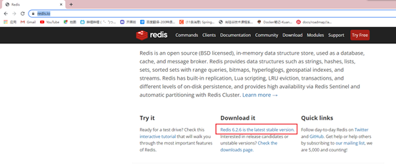
(二)、Centos7准备环境
安装C 语言的编译环境
1yum install –y centos-release-scl scl-utils-build2yum install -y devtoolset-8-toolchain3scl enable devtoolset-8 bash4gcc –verson
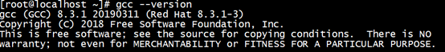
(三)、上传压缩包
xxxxxxxxxx21ctrl+p2cd /opt
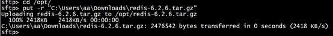
(三)、解压文件
xxxxxxxxxx31tar –zxvf redis-6.2.6.tar.gz2cd redis-6.2.63make
(四)、安装
xxxxxxxxxx11make install
(五)、进入/usr/local/bin查看文件
xxxxxxxxxx21cd /usr/local/bin2ls
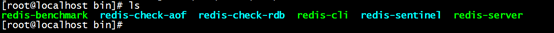
安装成功
(六)、目录介绍
xxxxxxxxxx71查看默认安装目录：2redis-benchmark:性能测试工具，可以在自己本子运行，看看自己本子性能如何3redis-check-aof：修复有问题的AOF文件，rdb和aof后面讲4redis-check-dump：修复有问题的dump.rdb文件5redis-sentinel：Redis集群使用6redis-server：Redis服务器启动命令7redis-cli：客户端，操作入口
(七)、后台启动
xxxxxxxxxx21编辑/opt/redis-6.2.6/下的redis.conf2第257行修改为yes,支持后台启动
xxxxxxxxxx21使用redis-server加这个路径文件名就能后台启动了2redis-server redis.conf
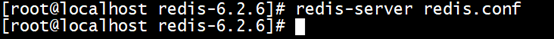
(八)、测试连接
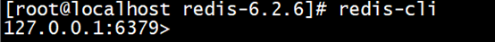
(九)、停止redis
进去服务器
shutdown
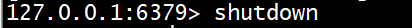
二、常用五大数据类型
(一)、Redis键(key)操作
xxxxxxxxxx121keys * # 查看当前库所有key (匹配：keys *1)2exists key # 判断某个key是否存在3type key # 查看你的key是什么类型4del key # 删除指定的key数据5unlink key # 根据value选择非阻塞删除6仅将keys从keyspace元数据中删除，真正的删除会在后续异步操作。7expire key 10 # 10秒钟：为给定的key设置过期时间8ttl key # 查看还有多少秒过期，-1表示永不过期，-2表示已过期9select # 命令切换数据库10dbsize # 查看当前数据库的key的数量11flushdb # 清空当前库12flushall # 通杀全部库(二)、Redis字符串(String)
1、简介
String是Redis最基本的类型，一个key对应一个value。
String类型是二进制安全的。意味着Redis的string可以包含任何数据。比如jpg图片或者序列化的对象。
String类型是Redis最基本的数据类型，一个Redis中字符串value最多可以是512M
2、String常用命令
xxxxxxxxxx151set key value # 如果不存在则创建一个key value,如果key已存在修改value的值2get key # 获取key的value值3strlen key # 获取key的长度4setnx key value # 创建一个key value,如果key已存在报错5incr key # 将key中储存的值+1,value必须为数字类型6decr key # 将key中储存的值-1,value必须为数字类型7incr key 步长 # 将key中储存的值+步长,value必须为数字类型8decr key 步长 # 将key中储存的值-步长,value必须为数字类型9mset key value key value # 创建多个key value10mget key value key value # 获取多个key的value值11msetnx key value key vale # 创建多个key value值,key不存在情况下12getrange key 3 4 # 获取一个key的第三个字符到第四个字符,包前包后13setrange key 3 value # 在第三个字符后面插入一个value14setex key 过期时间 value # 规定一个key过期时间15getset key value # 查看一个key的value,但随后被替换为新的value(三)、Redis列表(List)
1、简介
Redis 列表是简单的字符串列表，按照插入顺序排序。你可以添加一个元素到列表的头部（左边）或者尾部（右边）。
它的底层实际是个双向链表，对两端的操作性能很高，通过索引下标的操作中间的节点性能会较差。
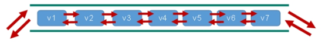
2、常用命令
xxxxxxxxxx91lpush key value1 value2 valu3 # 在左边插入值,结果是 value3 value2 value12rpush key value1 value2 valu3 # 在右边插入值,结果是 value1 value2 value33rpoplpush key1 key2 # 从key1的右边吐出一个值,就像迭代器一样,每执行一次吐出一个值加到key2后面4lrange key value start stop # 取出这个key的start stop的值,0 -1是取出全部5lindex key index # 根据index取出value的值6llen key # 获取key的长度7linsert key before value newvalue # 在本来的value值后面插入一个值8lrem key n value # 从左边删除n个value9lset key index value # 将key下标为index的value替换为新的value
(四)、Redis集合(Set)
1、简介
无序集合
2、常用命令
xxxxxxxxxx111sadd key value value # 创建一个新的集合2smembers key # 取出该集合所有的值3sismember key value # 判断该集合是否含有value值 有1 无04scard key # 返回该集合的元素个数5srem key value1 value2 # 删除集合中的value元素6spop key # 随机吐出集合的一个值,吐出就删除了7srandmember key n # 随机从集合中取出n个值,不删除8smove key1 key2 value # 从key1中取出value添加到key2中9sinter key1 key2 # 返回两个集合交集的元素,2个集合都有的值10sunion key1 key2 # 返回两个集合并集的元素,2个集合全部的值11sdiff key1 key2 # 返回两个集合差集的元素,key1中没有key2的值(五)、Redis哈希(Hash)
1、简介
Redis hash是一个string类型的field和value的映射表，hash特别适合用于存储对象。
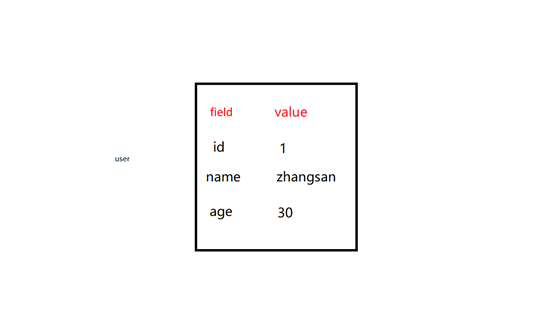
2、常用命令
xxxxxxxxxx71hset key field value # 添加一个哈希集合,添加一个值 hset user id 12hget key field # 获取key中field的value值3hmset key field value1 field value2 # 添加一个哈希结合,添加多个值 hmset user id 1 name zhangsan4hexists key field # 查看哈希表key中,field是否存在5hkeys key # 列出该hash集合所有的value6hincrby key field increment # 为哈希表key中field的value值加步长7hsetnx key field value # 在哈希表key中添加一列firld-value(六)、Redis有序集合(sorted set)
1、简介
Redis有序集合zset与普通集合set非常相似，是一个没有重复元素的字符串集合。
不同之处是有序集合的每个成员都关联了一个评分（score）,这个评分（score）被用来按照从最低分到最高分的方式排序集合中的成员。集合的成员是唯一的，但是评分可以是重复了 。
2、常用命令
xxxxxxxxxx81zadd key 评分 value 评分 value # 创建一个有序集合,根据评分选择先后2zrange key start end withscores # 返回下标为几到几的,withscores显示评分3zrangebyscore key 评分~评分 [withscores] # 返回评分几到几,withscores显示评分4zrevrangebyscore key 评分~评分 [withscores] # 返回key中频分几到几的值,withscores显示评分,从大到小排列5zincrby key 步长 value # 为key中的value评分加步长6zrem key value # 删除指定的值7zcount key min max # 评分几到几的个数8zrank key value # 返回该值在集合中的排名,从0开始三、配置文件介绍
(一)、units单位
配置大小单位,开头定义了一些基本的度量单位，只支持bytes，不支持bit
大小写不敏感
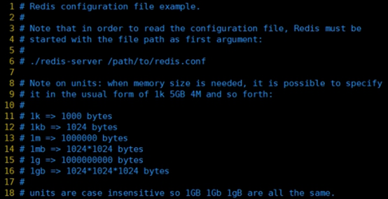
(二)、Incloud包含
类似jsp中的include，多实例的情况可以把公用的配置文件提取出来
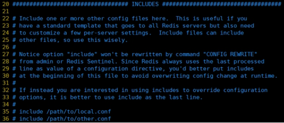
(三)、网络相关配置
1、bind
默认情况bind=127.0.0.1只能接受本机的访问请求
不写的情况下，无限制接受任何ip地址的访问
生产环境肯定要写你应用服务器的地址；服务器是需要远程访问的，所以需要将其注释掉
如果开启了protected-mode，那么在没有设定bind ip且没有设密码的情况下，Redis只允许接受本机的响应
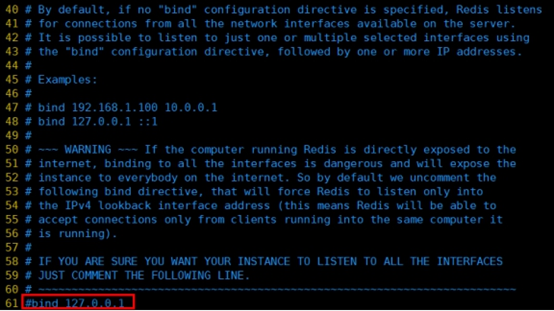
2、protected-mod
将本机访问保护模式设置no
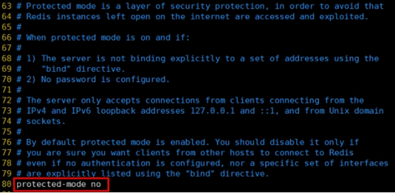
3、post
端口号，默认 6379
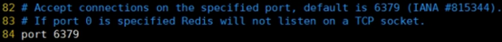
4、tcp-backlog
设置tcp的backlog，backlog其实是一个连接队列，backlog队列总和=未完成三次握手队列 + 已经完成三次握手队列。
在高并发环境下你需要一个高backlog值来避免慢客户端连接问题。
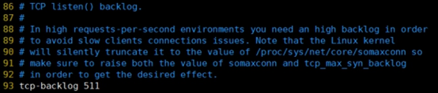
5、timeout
当客户端连接停止多少秒不操作停止关闭连接, 0表示关闭该功能。即永不关闭。
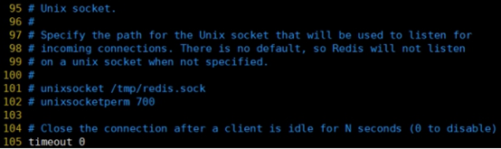
6、tcp-keepalive
时隔多少秒对客户端进行检测是否存活
对访问客户端的一种心跳检测，每个n秒检测一次。
单位为秒，如果设置为0，则不会进行Keepalive检测，建议设置成60
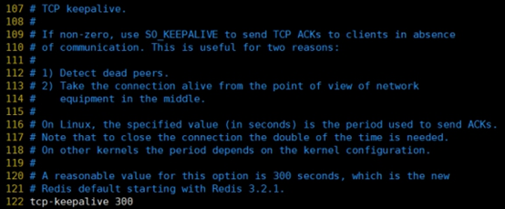
(四)、General
1、daemonize
是否为后台进程，设置为yes
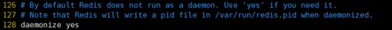
2、pidfile
存放pid文件的位置，每个实例会产生一个不同的pid文件
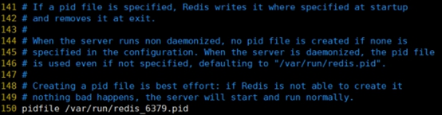
3、loglevel
指定日志记录级别，Redis总共支持四个级别：debug、verbose、notice、warning，默认为notice
四个级别根据使用阶段来选择，生产环境选择notice 或者warning
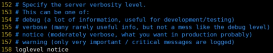
4、database 16
设定库的数量 默认16，默认数据库为0，可以使用SELECT
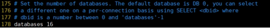
(五)、security安全
1、设置密码
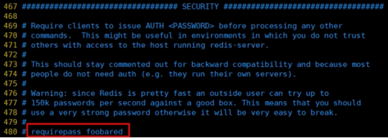
访问密码的查看、设置和取消
在命令中设置密码，只是临时的。重启redis服务器，密码就还原了。
永久设置，需要再配置文件中进行设置。
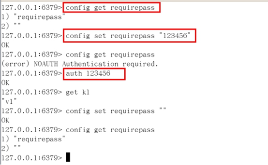
(六)、limits限制
1、maxclients
设置redis同时可以与多少个客户端进行连接。
默认情况下为10000个客户端。
如果达到了此限制，redis则会拒绝新的连接请求，并且向这些连接请求方发出“max number of clients reached”以作回应。
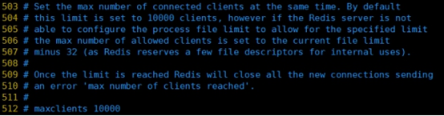
2、maxmemory
建议必须设置，否则，将内存占满，造成服务器宕机
设置redis可以使用的内存量。一旦到达内存使用上限，redis将会试图移除内部数据，移除规则可以通过maxmemory-policy来指定。
如果redis无法根据移除规则来移除内存中的数据，或者设置了“不允许移除”，那么redis则会针对那些需要申请内存的指令返回错误信息，比如SET、LPUSH等。
但是对于无内存申请的指令，仍然会正常响应，比如GET等。如果你的redis是主redis（说明你的redis有从redis），那么在设置内存使用上限时，需要在系统中留出一些内存空间给同步队列缓存，只有在你设置的是“不移除”的情况下，才不用考虑这个因素。
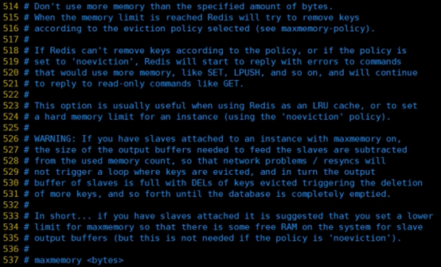
3、maxmemory-policy
volatile-lru：使用LRU算法移除key，只对设置了过期时间的键；（最近最少使用）
allkeys-lru：在所有集合key中，使用LRU算法移除key
volatile-random：在过期集合中移除随机的key，只对设置了过期时间的键
allkeys-random：在所有集合key中，移除随机的key
volatile-ttl：移除那些TTL值最小的key，即那些最近要过期的key
noeviction：不进行移除。针对写操作，只是返回错误信息
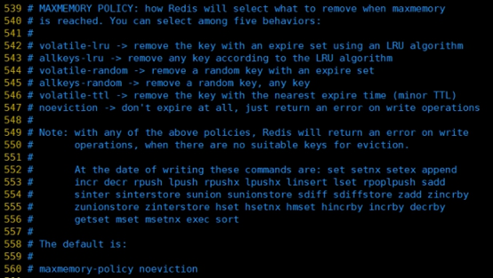
4、maxmemory-samples
设置样本数量，LRU算法和最小TTL算法都并非是精确的算法，而是估算值，所以你可以设置样本的大小，redis默认会检查这么多个key并选择其中LRU的那个。
一般设置3到7的数字，数值越小样本越不准确，但性能消耗越小。
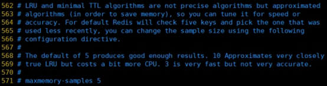
四、Redis的发布和订阅
(一)、什么是发布和订阅
Redis 发布订阅 (pub/sub) 是一种消息通信模式：发送者 (pub) 发送消息，订阅者 (sub) 接收消息。
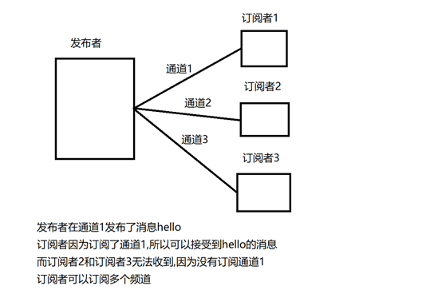
Redis 客户端可以订阅任意数量的
(二)、发布和订阅的实现
1、打开一个客户端订阅通道一
xxxxxxxxxx11subscribe channel1
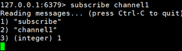
2、再打开一个客户端在channel1发布消息
xxxxxxxxxx11publish channel1 hello
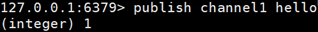
返回的1是订阅者数量
3、打开第一个客户端可以看到发送的信息
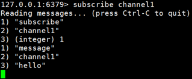
五、Redis新数据类型
(一)、BitMaps
1、 简介
Bitmaps本身不是一种数据类型，实际上它就是把字符串(key-value),但是它可以对字符串的位进行操作
Bitmaps是一个位单位的数组，数组的每个单元只能存储0和1，数组下标bitmaps中叫做偏移量

2、 命令
xxxxxxxxxx11Setbit key offset value # 创建一个Bitmaps中某个偏移量的值 0 或 1
演示案例：
当某某用户访问网站的时候就把他的偏移量变为1
设置1 6 11 15 19号用户访问过网站
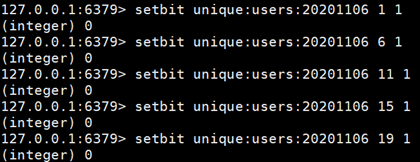
xxxxxxxxxx11Getbit key offset # 获取bitmaps中的某个偏移量
演示案例：
获取id为8的用户是否在某天访问过，返回0说明没有访问过：
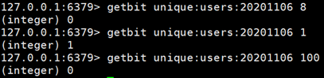
xxxxxxxxxx21Bitcount key # 获取这个key中为1的数量2Bitcount key start end # 计算start*8到end*8中1的个数
举例： K1 【01000001 01000000 00000000 00100001】，对应【0，1，2，3】
Bitop and(or/not/xor) destkey key # bitop是一个复合操作， 它可以做多个Bitmaps的and(交集)、 or、(并集) 、 not(非) 、 xor(异或) 操作并将结果保存在destkey中。
演示案例：
2020-11-04 日访问网站的userid=1,2,5,9。
setbit unique:users:20201104 1 1
setbit unique:users:20201104 2 1
setbit unique:users:20201104 5 1
setbit unique:users:20201104 9 1
2020-11-03 日访问网站的userid=0,1,4,9。
setbit unique:users:20201103 0 1
setbit unique:users:20201103 1 1
setbit unique:users:20201103 4 1
setbit unique:users:20201103 9 1
计算出两天都访问过网站的用户数量
bitop and unique:users:and:20201104_03 unique:users:20201103 unique:users:20201104
Bitop 并集 暂时存储的集合 20201103号 20201104号
3、 说明
用户多的时候用bitmaps 用户少的时候使用key-value
(二)、HyperLogLog
1、简介
用于记录不重复的数据,比如说在这个类型中的一个key中存储了java,再存java就失败了
2、命令
xxxxxxxxxx11pfadd key 值1 值2 # 创建一个set差不多的数据类型
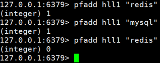
xxxxxxxxxx11pfcount key [key…] # 统计1个或多个key中不重复的数据
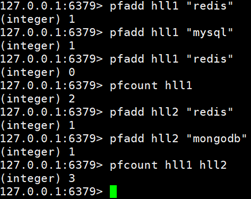
xxxxxxxxxx11pfmerge key3 key2 key1 # 将key1和key2的值合并到key3中

(三)、Geospatial
1、简介
对地理位置的操作
2、命令
xxxxxxxxxx11**geoadd** key 经度 纬度 名称 # 添加一个或多个地理位置坐标
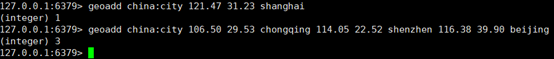
两极无法直接添加，一般会下载城市数据，直接通过 Java 程序一次性导入。
有效的经度从 -180 度到 180 度。有效的纬度从 -85.05112878 度到 85.05112878 度。
当坐标位置超出指定范围时，该命令将会返回一个错误。
已经添加的数据，是无法再次往里面添加的。
xxxxxxxxxx11**geopos** key 城市名 # 返回地理位置的经度,纬度
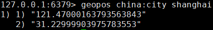
xxxxxxxxxx11**geodist** key 地理位置 地理位置 [m|km|ft|mi] # 获取2个位置之间的直线距离

单位：
m 表示单位为米[默认值]。
km 表示单位为千米。
mi 表示单位为英里。
ft 表示单位为英尺。
如果用户没有显式地指定单位参数， 那么 GEODIST 默认使用米作为单位
georadius key 经度 纬度 距离 单位 # 找出经度纬度半径距离画圆之内的城市
六、Redis_Jedis
(一)、环境配置
1、 Jedis需要的jar包
创建一个普通的Maven---导入jar包
xxxxxxxxxx71<dependencies>2 <dependency>3 <groupId>redis.clients</groupId>4 <artifactId>jedis</artifactId>5 <version>3.2.0</version>6 </dependency>7</dependencies>2、 linux开启对外开放
xxxxxxxxxx11vi /opt/redis-6.2.6/redis.conf
75行注释
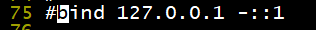
94行改为no
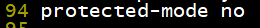
关闭防火墙和selinux
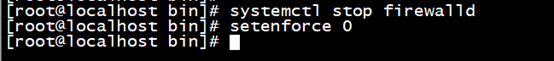
3、 创建测试类
xxxxxxxxxx71public void test1(){3 Jedis jedis = new Jedis("192.168.2.166", 6379);4 String pong = jedis.ping();5 System.out.println("连接成功:"+pong);6 jedis.close();7}(二)、key
xxxxxxxxxx191public void test2(){3 //设置第一个key值4 jedis.set("k1","value1");5 //设置第二个key值6 jedis.set("k2","value2");7 //获取对应key的value8 jedis.get("k1");9 //获取所有的key10 Set<String> keys = jedis.keys("*");11 for (String key : keys) {12 System.out.println(key);13 }14 //查看这个key是否有值15 System.out.println(jedis.exists("k1"));16 //查看这个key的存活时间17 System.out.println(jedis.ttl("k2"));18 jedis.close();19}(三)、String
xxxxxxxxxx81public void test3(){3 //添加多个值4 jedis.mset("k1","value1","k2","value2");5 //获取多个key的value值6 System.out.println(jedis.mget("k1","k2"));7 jedis.close();8}(四)、List
xxxxxxxxxx101public void test4(){3 //创建一个list,存放2个值4 jedis.rpush("myList","aaa","bbb");5 //获取mylist的value6 List<String> myList = jedis.lrange("myList", 0, -1);7 for (String s : myList) {8 System.out.println(s);9 }10}(五)、Set
xxxxxxxxxx141public void test5(){3 //创建一个set添加值4 jedis.sadd("myset","aaa");5 jedis.sadd("myset","bbb");6 jedis.sadd("myset","ccc");7 //获取值8 Set<String> myset = jedis.smembers("myset");9 for (String s : myset) {10 System.out.println(s);11 }12 //查看value在set的哪一个位置13 System.out.println(jedis.srem("myset", "aaa"));14}(六)、Hash
xxxxxxxxxx201public void test6(){3 //创建一个hash的person并赋值4 jedis.hset("person", "id","1" );5 jedis.hset("person", "name", "zhangsan");6 //获取pserson的name中的value7 System.out.println(jedis.hget("person", "name"));8 //声明一个map9 Map<String, String> map = new HashMap<>();10 map.put("dianhua", "18595926383");11 map.put("address", "192.168.1.1");12 map.put("email", "299@qq.cm");13 //创建一个set把map信息装进去14 jedis.hmset("personInfo", map);15 //获得一个key中属性的值16 List<String> hmget = jedis.hmget("personInfo", "dianhua", "address");17 for (String s : hmget) {18 System.out.println(s);19 }20}(七)、zset
xxxxxxxxxx101public void test7(){3 jedis.zadd("myZadd", 100, "a");4 jedis.zadd("myZadd", 90, "b");5 jedis.zadd("myZadd", 80, "c");6 Set<String> zadd = jedis.zrange("myZadd", 0, -1);7 for (String s : zadd) {8 System.out.println(s);9 }10}七、SpringBoot整合Redis
(一)、导入jar包
xxxxxxxxxx51<!-- redis -->2<dependency>3 <groupId>org.springframework.boot</groupId>4 <artifactId>spring-boot-starter-data-redis</artifactId>5</dependency>(二)、application配置redis
xxxxxxxxxx161#Redis服务器地址2spring.redis.host=192.168.2.1663#Redis服务器连接端口4spring.redis.port=63795#Redis数据库索引（默认为0）6spring.redis.database=07#连接超时时间（毫秒）8spring.redis.timeout=18000009#连接池最大连接数（使用负值表示没有限制）10spring.redis.lettuce.pool.max-active=2011#最大阻塞等待时间(负数表示没限制)12spring.redis.lettuce.pool.max-wait=-113#连接池中的最大空闲连接14spring.redis.lettuce.pool.max-idle=515#连接池中的最小空闲连接16spring.redis.lettuce.pool.min-idle=0(三)、导入配置类(固定写法)
x1public class RedisConfig {4
5 6 public RedisTemplate<String, Object> redisTemplate(RedisConnectionFactory factory) {7 RedisTemplate<String, Object> template = new RedisTemplate<>();8 RedisSerializer<String> redisSerializer = new StringRedisSerializer();9 Jackson2JsonRedisSerializer jackson2JsonRedisSerializer = new Jackson2JsonRedisSerializer(Object.class);10 ObjectMapper om = new ObjectMapper();11 om.setVisibility(PropertyAccessor.ALL, JsonAutoDetect.Visibility.ANY);12 om.enableDefaultTyping(ObjectMapper.DefaultTyping.NON_FINAL);13 jackson2JsonRedisSerializer.setObjectMapper(om);14 template.setConnectionFactory(factory);15 //key序列化方式16 template.setKeySerializer(redisSerializer);17 //value序列化18 template.setValueSerializer(jackson2JsonRedisSerializer);19 //value hashmap序列化20 template.setHashValueSerializer(jackson2JsonRedisSerializer);21 return template;22 }23
24 25 public CacheManager cacheManager(RedisConnectionFactory factory) {26 RedisSerializer<String> redisSerializer = new StringRedisSerializer();27 Jackson2JsonRedisSerializer jackson2JsonRedisSerializer = new Jackson2JsonRedisSerializer(Object.class);28 //解决查询缓存转换异常的问题29 ObjectMapper om = new ObjectMapper();30 om.setVisibility(PropertyAccessor.ALL, JsonAutoDetect.Visibility.ANY);31 om.enableDefaultTyping(ObjectMapper.DefaultTyping.NON_FINAL);32 jackson2JsonRedisSerializer.setObjectMapper(om);33 // 配置序列化（解决乱码的问题）,过期时间600秒34 RedisCacheConfiguration config = RedisCacheConfiguration.defaultCacheConfig()35 .entryTtl(Duration.ofSeconds(600))36 .serializeKeysWith(RedisSerializationContext.SerializationPair.fromSerializer(redisSerializer))37 .serializeValuesWith(RedisSerializationContext.SerializationPair.fromSerializer(jackson2JsonRedisSerializer))38 .disableCachingNullValues();39 RedisCacheManager cacheManager = RedisCacheManager.builder(factory)40 .cacheDefaults(config)41 .build();42 return cacheManager;43 }44 45}(四)、创建Controller进行测试
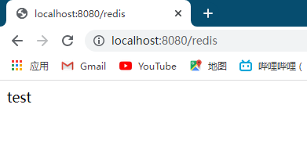
八、事务锁秒杀
(一)、事务的定义
Redis事务是一个单独的隔离操作：事务中的所有命令都会序列化、按顺序地执行。事务在执行的过程中，不会被其他客户端发送来的命令请求所打断。
Redis事务的主要作用就是串联多个命令防止别的命令插队。
(二)、Multi(组队)、Exec(执行)、discard(取消组队)
1、介绍
从输入Multi命令开始，输入的命令都会依次进入命令队列中，但不会执行，直到输入Exec后，Redis会将之前的命令队列中的命令依次执行。
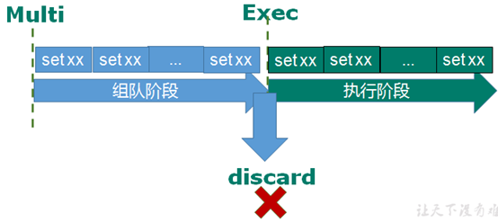
2、案例
2.1、三种情况:
组队执行成功----------顺利执行
组队失败,执行成功---所有失败
组队成功,执行失败---就执行失败的哪一条失败
2.2、组队执行成功
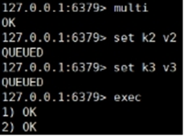
2.2、组队阶段失败,全部失败
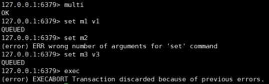
2.3、组队成功,执行失败
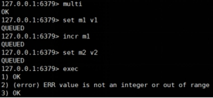
(三)、事务冲突问题
一个请求想给金额减8000
一个请求想给金额减5000
一个请求想给金额减1000
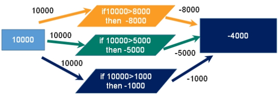
(四)、锁
1、悲观锁
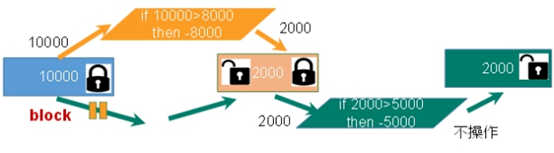
当一个去操作数据是给数据上锁,其他人不能使用该数据,当使用完释放锁
传统的关系型数据库里边就用到了很多这种锁机制，比如行锁，表锁等，读锁，写锁等，都是在做操作之前先上锁。
2、乐观锁
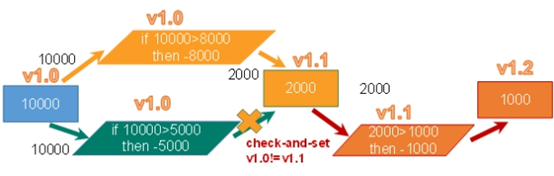
当一个人去操作数据的时候不会上锁,其他人也可以拿数据,但是当一个人修改完数据,其他人操作的时候会去检测是否有人修改了数据,如果有人修改了数据,则进行更新
乐观锁适用于多读的应用类型，这样可以提高吞吐量。Redis就是利用这种check-and-set机制实现事务的。
(五)、乐观锁演示
1、第一个客户端
xxxxxxxxxx51set blance 100 //创建一个key2watch blance //监视这个key3multi //开启事务组队模式4decrby blance 10 //给这个key+105exec //执行+10操作2、第二个客户端
xxxxxxxxxx51watch blance //第二个也监视这个key2multi //开启事务组队3decrby blance 10 //同样进行+10操作4exec //开始执行5(null) //执行失败,因为第一个客户端已经修改了这个值(六)、unwatch
1、取消 WATCH 命令对所有 key 的监视。
2、如果在执行 WATCH 命令之后， EXEC 命令或 DISCARD 命令先被执行了的话，那么就不需要再执行 UNWATCH 了。
3、因为 EXEC 命令会执行事务，因此 WATCH 命令的效果已经产生了；而 DISCARD 命令在取消事务的同时也会取消所有对 key 的监视，因此这两个命令执行之后，就没有必要执行 UNWATCH 了。
(七)、Redis事务三特性
Ø 单独的隔离操作
事务中的所有命令都会序列化、按顺序地执行。事务在执行的过程中，不会被其他客户端发送来的命令请求所打断。
Ø 没有隔离级别的概念
xxxxxxxxxx11队列中的命令没有提交之前都不会实际被执行，因为事务提交前任何指令都不会被实际执行
Ø 不保证原子性
事务中如果有一条命令执行失败，其后的命令仍然会被执行，没有回滚
(八)、Redis事务--秒杀并发模拟
使用工具ab模拟测试
CentOS6 默认安装
CentOS7需要手动安装
1、准备处理业务程序
xxxxxxxxxx391//秒杀过程2public static boolean doSecKill(String uid, String prodid) throws IOException {3 //判断参数是否为空4 if (uid == null && prodid == null) {5 return false;6 }7 //连接数据库8 Jedis jedis = new Jedis("192.168.2.166", 6379);9
10
11 //拼接字符串12 String kckey = "sk:" + prodid + ":qt";13 String userkey = "sk:" + prodid + ":user";14 //判断秒杀是否开始15 String kc = jedis.get(kckey);16 if (kc == null) {17 System.out.println("秒杀还没有开始");18 jedis.close();19 return false;20 }21 //判断用户是否秒杀成功过22 if (jedis.sismember(userkey, uid)) {23 System.out.println("您已经秒杀过了");24 jedis.close();25 return false;26 }27 //判断商品是否为空28 if(Integer.parseInt(kc)<=0){29 System.out.println("商品已被抢空");30 jedis.close();31 return false;32 }33 //库存-134 jedis.decr(kckey);35 System.out.println("秒杀成功");36 //添加抢购成功用户id37 jedis.sadd(userkey, uid);38 return true;39}2、联网安装
xxxxxxxxxx11yum –y install httpd-tools
3、在当前文件夹下创建一个postfile文件
xxxxxxxxxx21vi postfile2prodid=0101&
4、在redis中创建商品的key
xxxxxxxxxx11set sk:0101:qt 10
5、并发测试
xxxxxxxxxx212000连接数 200个位并发请求2ab -n 2000 -c 200 -k -p ~/postfile -T application/x-www-form-urlencoded http://192.168.2.115:8081/Seckill/doseckill6、发现商品溢出
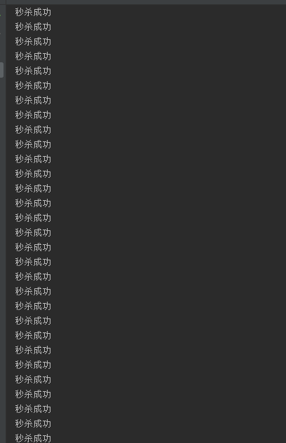
(九)、乐观锁解决超卖问题
xxxxxxxxxx521//秒杀过程2public static boolean doSecKill(String uid, String prodid) throws IOException {3 //判断参数是否为空4 if (uid == null && prodid == null) {5 return false;6 }7 //连接数据库8 Jedis jedis = new Jedis("192.168.2.166", 6379);9
10 //拼接字符串11 String kckey = "sk:" + prodid + ":qt";12 String userkey = "sk:" + prodid + ":user";13
14 //增加乐观锁15 jedis.watch(kckey);16
17 //判断秒杀是否开始18 String kc = jedis.get(kckey);19 if (kc == null || "".equals(kc.trim())) {20 System.out.println("秒杀还没有开始");21 jedis.close();22 return false;23 }24 //判断用户是否秒杀成功过25 if (jedis.sismember(userkey, uid)) {26 System.out.println("您已经秒杀过了");27 jedis.close();28 return false;29 }30 //判断商品是否为空31 if(Integer.parseInt(kc)<=0){32 System.out.println("商品已被抢空");33 jedis.close();34 return false;35 }36
37 //增加事务38 Transaction multi = jedis.multi();39 //库存-140 multi.decr(kckey);41 //添加抢购成功用户id42 multi.sadd(userkey, uid);43 List<Object> exec = multi.exec();44 if(exec==null||exec.size()==0){45 System.out.println("秒杀失败");46 jedis.close();47 return false;48 }49 System.err.println("秒杀成功");50 jedis.close();51 return true;52}九、连接池
节省每次连接redis服务带来的消耗，把连接好的实例反复利用。
通过参数管理连接的行为
代码见项目中
链接池参数
- MaxTotal：控制一个pool可分配多少个jedis实例，通过pool.getResource()来获取；如果赋值为-1，则表示不限制；如果pool已经分配了MaxTotal个jedis实例，则此时pool的状态为exhausted。
- maxIdle：控制一个pool最多有多少个状态为idle(空闲)的jedis实例；
- MaxWaitMillis：表示当borrow一个jedis实例时，最大的等待毫秒数，如果超过等待时间，则直接抛JedisConnectionException；
- testOnBorrow：获得一个jedis实例的时候是否检查连接可用性（ping()）；如果为true，则得到的jedis实例均是可用的；
xxxxxxxxxx221public static JedisPool getJedisPoolInstance() {2 if (null == jedisPool) {3 synchronized (JedisPoolUtil.class) {4 if (null == jedisPool) {5 JedisPoolConfig poolConfig = new JedisPoolConfig();6 poolConfig.setMaxTotal(200);7 poolConfig.setMaxIdle(32);8 poolConfig.setMaxWaitMillis(100*1000);9 poolConfig.setBlockWhenExhausted(true);10 poolConfig.setTestOnBorrow(true); // ping PONG11 jedisPool = new JedisPool(poolConfig, "192.168.44.168", 6379, 60000 );12 }13 }14 }15 return jedisPool;16} 17
18public static void release(JedisPool jedisPool, Jedis jedis) {19 if (null != jedis) {20 jedisPool.returnResource(jedis);21 }22}